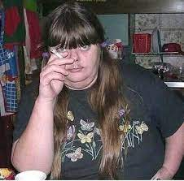

Это было необычное весенние утро.
Необычное оно было потому что ваня проснулся не как обычно в 13:00 а в 7:00.
ваня встал сегодня не просто так в такую рань, а потому что у его "девушки" Сони, было день рождение.
иван впервые за 2 месяца умылся и почистил зубы, ой та че там те зубы, ОН САМ ПРИГОТОВИЛ ЧЕРТ ВОЗЬМИ БУТЕРБРОД!!!
Когда ваня позавтракал и провел себя в порядок, то он столкнулся с самой сложной проблемой, ему надо было добраться до другой части Киева.
Так как ваня был тупиньким мальчиком, то для него это была большая проблема, тем более он идет один.
ваня решил что поедет пешком.
Когда ваня был на улице то он вспомнил что не приготовил подарок, и зашел в первый попавшийся магазин чтобы исправить данное не недоразумение.
В магазине ване приглянулась очень элитная бутылка коньяка, ну у него не было на ее денег.
И он "сверг интеллектуал" придумал просто гениальную идею! Он пронесет бутылку, в заднем проходе!
так как у него уже был опыт в данной сфере дияльности, то особых проблем быть не должно?
проблем бы не было если этот малолетний делбик не захотел еще украсть у поковку роскошных конфет на которых у него тоже не было денег.
Ваня попытался быстро выскочить из магазина из всем награбленным, но охрана его быстро схватила.
Так как охраннику было скучно целыми днями ловить таких малолетних воришков как ваня, то ему полагался выбор, либо звоним родителям, или же охранник прописывает 3 жестких пенделя и он уходит.
ване не тот и не другой вариант не нравился, так как в первом его накажут и не отпустят в гости, а во втором у него стеклянная бутылка в жопе какие еще на фиг пендели???
Ну в итоге ване сильно повезло так как его хороший друг бомж Валера оказался в нужном месте в нужное время, и отвлек охранника тем самым дав ване возможность сбежать.
Когда ваня с Валерой отбежали на безопасное расстояние от охранника, то в качестве благодарности ивану пришлось отдать бутылку коньяка другу.
Попрощавшийся с Валерой ваня понял что снова остался без подарка к своей возлюбленной.
По пути к подруги ваня долго думал где можно найти подарок.
В итоге он сорвал пару ромашек с клумбы.
после того как ваня раздобыл подарок он пошел дальше к своей "девушке"
По пути ваня постоянно думал о ней, большие глаза, стройное тело, длинные ноги, красивое лицо, Вообщем идеальная девушка.
Когда ваня шел то почитал что дойдет только через 5 часов, ваню устраивал такой вариант, но ему надо было прийти через 2 часа.
ваня все таки решил что пешком идти не самая лучшая идея и пошел до ближайшей станции метро.
Внутри ваню ждал неприятный сюрприз, как оказалось проезд на метро стоил денег, которых у него не было.
Изначально ваня хотел пробежать мимо ограждений и сесть в вагон, ну он не отважился на такую авантюру, ведь риски получить @*%*!*& был крайне большой.
ваня стал попрошайничать деньги у прохожих, ну они могли дать ему только по лицу.
после очередной неудачи ваня пошел на крайние меры, он вызвал такси...
ваня сел в такси.
Внутри он с водителем договорился что оплетет поездку по завершению маршрута.
Конечно ваня не собирался ничего оплачивать, он хотел вылетит из такси и убежать когда та приедет в нужное место.
Когда таксист сказал - приехали - то ваня тут же открыл двери и убежал в переулки.
через минуту ваня остановился и спрятался за углом старого дома.
Когда ваня отдышался то заглянул за угол, чтобы разведать обстановку.
Там стоял злой таксист с лопатой, он тут же ударил ею по голове вани от чего тот потерял сознание и отключился.
ваня очнулся по всей видимости в багажнике машины.
У вани дико болела голова, ну это была не самая большая проблема.
Главная проблема была в том что у него на голове был надет мишак, а руки были связаны за спиной.
Ваня попробовал закричать, машина остановилась.
Из нее вышел человек и отправился к багажнику.
Когда мужчина открыл багажник то со всей силы зарядил ване в голову отчего тот снова отключился.
Всеведущий раз ваня очнулся в непонятном месте.
Стены и пол были все из бетона, также тут была железная дверь и две кровати, и еще тут была Диана???
ваня тут же спросил где они находятся и что она тут делает.
Та ответила что они находятся в страшной комнате и что попала она сюда так - гуляю гуляю куда иду не знаю, смотрю в переулок и вижу попыт, иду его подобрать и резко боль в голове, после чего я здесь.
ваня сильно удивился, так как думал что они находятся в супер крутом отеле, а не в страшной комнате.
ваню больше волновал вопрос не о том как от сюда сбежать, а о том что он хочет есть, ведь он просто обожает жрааать.
Диана сказала что сидит она здесь уже целый день,и заметила что еду дают раз в 5 часов, ну для нее это была не особо большая проблема, так как она ест раз в два дня.
ваня был очень сильно состроен услышав эту информацию, ведь он ест раз в 2 часа, и не может и дня прожить без еды.
Через час ваня уже терял сознания от голода, он уже думал какая руку на вкус.
Через еще один час железная дверь в комнату приоткрылась и в нее кинули две сырых картошки и со словами - еште холопы - закрыли дверь.
ваня был в бешенстве, он кричал и долбился в железную дверь что бы ему дали хотя бы один бутерброд!
Когда ваня успокоился и перестал пинать дверь то из нее вышел огромный мужик <ростом в два метра> и дал ване пару ударов по лицу, после чего ушел.
ваня с болью и обидой ел свой ужин в размере одной сырой картошки.
Через час с ваней начало творится нечто...
У ваня стали желтые глаза, через два часа появились клыки и длинные, острые, ногти, через 3 часа он перестал контролировать свой разум, через еще 2 часа он окончательно озверел и превратился в огромного жирного монстра, который хотел есть.
ваня (а точнее уже огромный монстр) удивил в углу Диану, которая от страха не могла пошевелиться.
Монстр уже держал бедного додика в своих руках приготовившись ее сесть, как вдруг услышал в коридоре знакомый голос.
иваномонстр тут же рванул в сторону голоса попутно выломав дверь с дверным проемом..
За дверью стоял тот огромный мужик который избил ваню.
У (бедного) мужщины ни шанца небыло перед огомным монстра.
ваня двумя глотками проглотил мужчину.
На устроенный шум прибирала толпа охранников, они были в ужасе удивив данное зрелище.
Половину из них стошнило так как коридор был весь в крови от первой жертвы.
Монстр тут же накинулся на толпу, перебив всех он побежал в глубь коридора, попутно убивая всех кто попадался на его пути.
Выжившие рабочие эвакуировались.
Через пол часа как ваня наелся трупами он начал обратно превращаться в человека.
Уже через час ваня полностью принял свой прежний облик.
Он был в ужасе от того что здесь произошло, так как он ничего не помнил.p>
Когда ваня удивил Диану которая в ужасе ходила по коридору то зразу спроси что за чертовщина здесь произошла.
Диана розказала все что видела и слышала.
Когда ваня узнал что превратился в монстра то он был... был... восторге! ведь теперь он может шантажировать учителей, чтобы они ставили ему только хоровые оценки.
Диана и ваня начали исследовать здание.
Прогулявшийся по коридорам они выяснили что это заброшенная больница, а находились они в подвальном помещении.
Погуляв еще чучуть они вдруг осознали что вокруг них кругом такие самые двери как у них комнате.
Они решили открыть одну дверь и посмотреть что за ней скрывается, благо что двери закрываются на защелку и их легко было открыть.
Когда они ее открыли до были удивлены,так как там находились тоже дети.
Ребята пообщались.
Как оказалось те кого спасли ваня вместе с Дианой сидели тут уже две недели и периодически кого то забирали и добавляли.
Все они толпой начали освобождать других ребят.
В общей суме они освободил 50-60 бедолаг которым посчастливилось попасть в такое жуткое место.
Поблагодарив ваню за спасения освобожденные нашли столовую и начали есть все что там было, ведь они не ели ооочень давно.
ваня хотел тоже что то похавать, ну вспомнил про свою мадам и быстро вышел на улицу.
Выйдя на улицу ваня очутился во дворе двух зданий, оба они были огромные, старые и пятиэтажные, они были загнутые образовав двор < [¯_] >
Ваня вышел через боковой выход правого здания, была кромешная тьма так как было 2 часа ночи.
Эта <заброшенная> больница находилась посереди леса.
В еле уловимо свете ночных фонарей Ваня увидел дорогу которая вида в лес.
Ваня не хотел туда идти но у него не было выбора.
Через 10 минут пыток хождению по полностью убитой дороге которая освещалась только ночной луной Ваня вышел на трассу.
Он на секунду обрадовался так как трасса было хорошо освещена, но потом увидел знак что до Киева 40 км дороги то тут же расстроился.
Ваня уже хотел идти пешком как вдруг вспомнил что во дворе больнице видел одиноко стоявшую машину.
Ваня снова 10 минут страдал по пути назад.
Когда он вернулся то заметил эту прелесть, ВАЗ-2101, в просто народе джигуль.
Попытавшись открыть машину Ваня понял что она заперта, ну эта не была серьезная проблема так как добавив чуть усилий замок легко оторвался ведь был очень старый.
Сев в машину Ваня не знал что делать, так как некогда не ездил.
По экспериментировал с машиной через 10 мин Ване удалось зависти старуху.
По научному методу рандомного тыканью Ваня всё таки не смог включить фары.
Разобравшийся как ездить <предводитель но пару раз врезавшись в стенку> он всё-таки смог поехать.
Ваня наверно одному только богу известно как доехал до трассы предварительно не умерев по пути.
Выехав на трассу ваня пробивал ехать аккуратно, не спеша чтобы не убиться.
Через минуту езды ваня увидел первую машину, которая почему то ехала прям к нему, буквально к нему ведь эта была многотонная фура которая ехала лоб в лоб к машине ване.
За пару секунд до неминуемой аварии, у вани пролетела все жизнь перед глазами, он помолился Иисусу и Аллаху одновременно.
ваня уже успев попрощаться с этим миром закрыл глаза и готов был отправится в ад, но не через секунду, и не через две, он так и не умер.
Открыв глаза ваня не обнаружил перед собой фуру.
Выйдя из машины ваня посмотрел назад, там лежала перевернутая фура.
ваня крикнул -так тебе и надо, будешь знать как по встречке ездить!- и сел обратно в машину.
Проехав еще пару метров ваня понял что это он ехал по встречке...P>
ваня тут же исправил данное недоразумение предварительно врезавшись в ограждение.
Почувствовав уверенность ваня начал ехать все быстрее и быстрее, с начало 60км/час, потом 70, еще через некоторое врема 80, 90, 100, 110, 120.
ваня хотел еще быстрее, ну машина не могла ездить на такой скорости
Когда до Киева оставалось 20км ваня попал в очередную беду.
Как оказалось когда едешь то надо внимательно смотреть на дорогу, а ваня этого не знал, и когда он в очередной раз задумался о какой то фигне, то не заметил как на дорогу выскочил какой то алкаш.
Ваня сбил бедолагу и прокатил его на капоте примерно метров 100.
Заехав на обочину ваня возмущался ведь его <ласточка> была заляпана в крови.
А труп ваня просто сел, так как был голодный.
Когда до Киева оставалось 10км то ваня увидел пост ментов.
Менты стали тормозить ваню ведь он ехал ночью без вез включены фар.
ваня не остановился, ведь ему было всполошишь 12 лет <а по интеллекту все 5> и его 100% ждали бы неприятности.
Началась погоня.
Когда ваненая развалюха ехал максимум 120км, то полицейская 210.
Поначалу менты орали в громко говоритель чтобы он остановился, иначе ему будет плохо, ну быстро поняли что его так не остановить.
Полицейские обогнали Ваню и ехали прямо перед ним.
Менты начали понемногу тормозить чтобы Ваня тоже начал тормозить, ну у него не работали тормоза и за чего он со всей скорости врезался в полицейских.
Произошла серьезная авария, ну Ване сильно повезло что ударился только головой и за этого остался жив.
Иза того что машина была не в состоянии ехать Ване пришлось дойти последний километр пешком.
Спустя 15 минут Ваня наконец то дошел до Киева
ване наконец то повезло, ведь его девушка жила в Оболонском районе (на севере Киева) как раз туда все это время добрался ваня.
ваня знал что живет она в центре района, также он знал ее адрес и номер квартиры, ну не знал точное место.
В итоге ваня еще минут 40 шел до центра.
Блуждая по дворам в поисках нужного дома, ваня наткнулся на местных гопников.
Они начали толпой прессовать ваню, они требы вали от него мобилу и деньги, ну когда узнали что денег и телефона у него нету, то просто его от@*%*!*& и кинули в мусорный бак там где ему и место.
Одохнув в помойке ваня пошел дальше.
По ночным улицам побитый ваня гулял еще пару минут размышляя о том какая неприятность его еще ждет.
Неприятности ваню нашли достаточно быстро, ведь полиция искала того кто устроил аварию на трассе и за чего погибло 2 полицейских, побитый ваня прекрасно подходил на эту должность, и за чего его быстро нашли и начали допрашивать прямо на улице.
Полицейский не поверил ване когда тот сказал что ему 12 лет, ведь после всего пережитого ваня был похож но 40 летнего, жирного, бомжа.
Полицейский сказал что ваня должен пройти с ним после чего взял его за плече и повел к машине, ваня спокойно шел в месте с полицейским.
В неожиданный момент ваня со всей силы толкнул своим восьмидесяти пяти килограммовым животом полицейского в стенку и побежал со всей силы по переулкам.
Погоня была жесткая, ваня то появлялся в поле зрения полицейского то пропадал, ваня хотел забежать в очередной переулок но увидев что от туда на встречу ему бежит еще один полицейский, то резко свернул вправо.
Из последних сил ваня забежал в очень узкий переулок и спрятался за мусорным баком, притворившысь мусором ваня задержал дыхание.
Забежавшие за ним полицейские остановились и быстро осмотрели переулок, отдышавшийся они побежали дальше.
ваня лежал еще 3 минуты, потому что боялся что полицейские вернутся.
ване удалось спастись только и за того что он и был мусором.
Когда ваня осознал что опасность миновала он сел притулившийся спиной к стене.
Отдышавшийся ваня поднял голову и увидел надпись <ул. лоханская, дом 12.>
ваня был нереально рад ведь, именно здесь живет его мадам.
иван подошел к входу в подъезду и попытался открыть дверь, ну к сожалению она была закрыта.
У двери было маленькое стеклянное окошко, через его ваня роз смотрел бомжа который спал на полу.
ваня попытался его разбудить, у него не получилось.
ваня думал каким способом можно еще попасть в дом.
В итоге ваня увидел дерево, с помощью ко кого можно было за лесть на балкон второго этажа.
Залез на дерево ваня почти дотянулся до балкона, ну в самый последний момент ваненоя нога соскользнула и тот полетел в низ.
Приземлившись на левую руку ваня услышал сильный хруст.
После чего так заорал что его и в Москве было слышно.
И за ваненого крика даже проснулся тот бомж в подъезде и открыл дверь чтобы посмотреть какой дебил там орет.
ваня увидев что дверь в подъезд открылась, он сразу встал и побежал внутрь.
Поблагодарив бомжа ваня с ломаной рукой начал подводница к своей девушке.
Подымаясь на пятый этаж поленнице (потому что лифта не было) ваня радовался, ведь его страдания наконец то окончены.
Стоя на против ее квартиры ваня ужасно нервничал, ведь добирался он сюда 20 часов, и было уже 3 ночи.
Выдохнув ваня позвонил в звонок и принялся ждать.
Стая в ожидании ваня перебрал в голове все что можно сказать, так как он некогда не общался с девушками, тем более он выглядел как бомж и был весь побитый.
Размышляя в ожидании ваня и не заметил как стоит уже минут 5.
ваня пару десятков раз позвонил в звонок предварительно кулаком стуча по двери.
Когда ваня остановился то услышал что за дверью включился свет и кто то шел в его сторону.
Замок в двери начался проворачиваться, и за чего ваня чуть не умер от стресса.
Когда дверь распахнулась, то ваня наконец то увидел свою принесу...
Она была... ЖИРНАЯ?? УРОДЛИВАЯ!!! С ГРЯЗНЫМИ ВОЛОСАМИ И УСАМИ!!??
(Нажми чтобы увидеть девушку вани)
После ее фразы - привет пупсик - ваня заорал и изо всех сил побежал по лестнице вниз.
Если сломав руку ваню еще не было слышно в Москве, то сейчас точно было слышно.
ваня не убегал от копов и таксиста так быстро как от того чудища.
уУбежав на безопасное расстояние (примерно 5 км) ваня наконец то остановился.
Осознав всю плачевность ситуации, ваня сел на лавочку и начал плакать, ведь все его старания, весь свой путь который он сегодня проделал, оказался напрасным.
Когда ваня ревя проклял этот мир, то пошел дождь.
Успокоившись, ваня встал и начал идти до дома, ведь все что ему сейчас хотелось так это поскорее заснуть и забыть этот проклятый день.
Идя под дождем по влажному тротуару вдоль ночной дороги, ваню пору раз обливали одинокие машины проезжающие возле него, после чего он еще долго орал им в след какие они плохие.
Через 3 часа дойдя до своего дома, ваня увидел своего друга Валеру, и тот увидев ваню в таком виде, предложил ему выпить украденным им же роскошный коньяк.
Уставший ваня согласился.
После чего залез на крышу высокоэтажки, после чего они двоем начали выпивая провожать этот ужасный день, и встречая новый, более лучший.